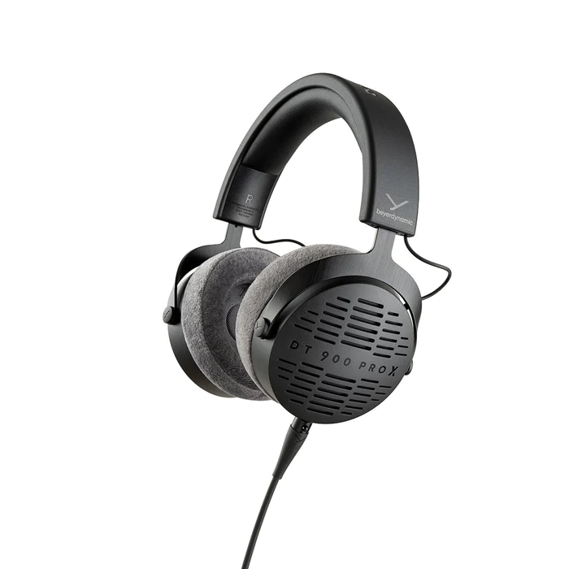

Beyerdynamic DT 900 Pro X

Beyerdynamic DT 900 Pro X Specifications
- Wireless: No
- Driver-type: STELLAR.45
- Connectivity: 3.5mm & 6.35mm adapter for mini-XLR
- Frequency response: 5 to 40,000Hz
- Operating principle: Open back
- Features: Velour earpads
Price: RM1,099
Add to Cart